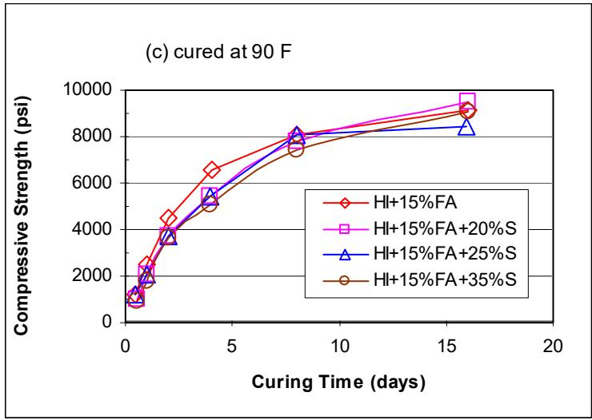
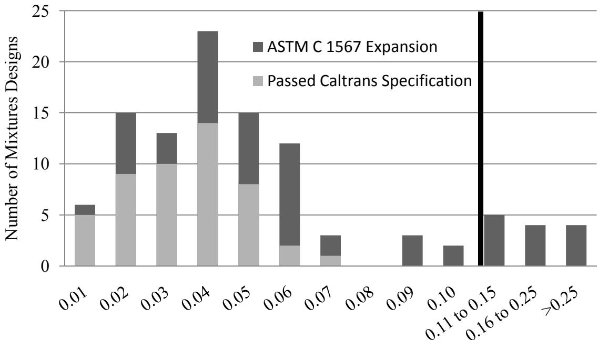
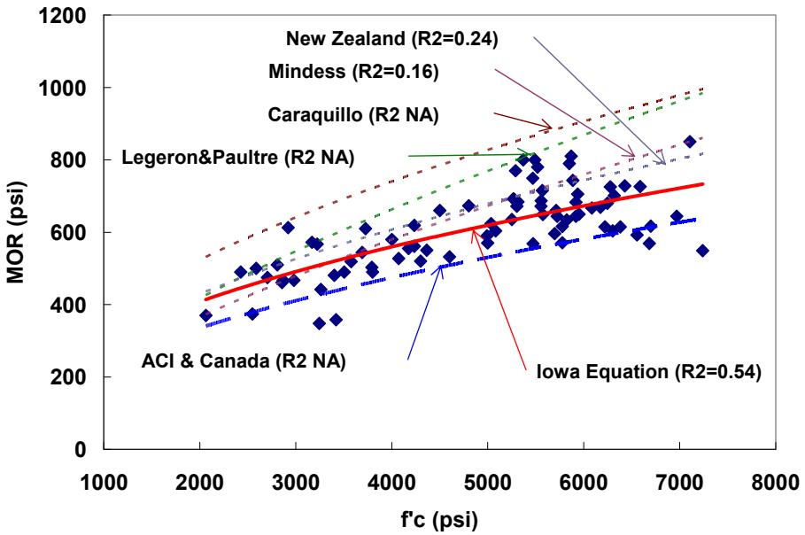
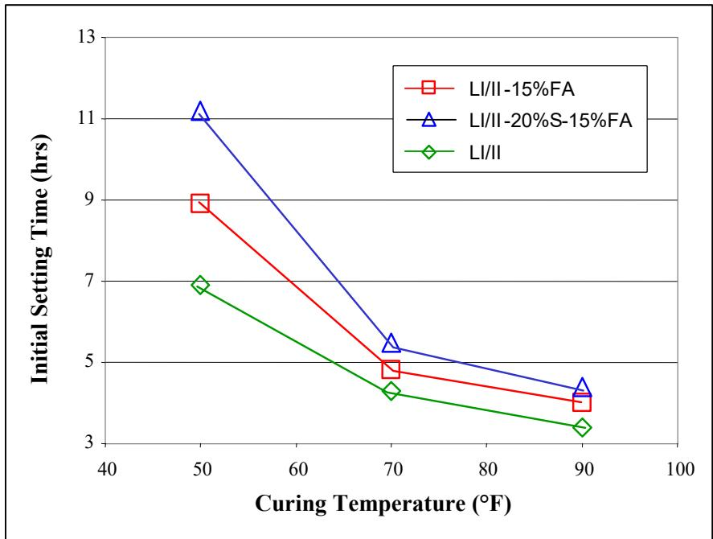
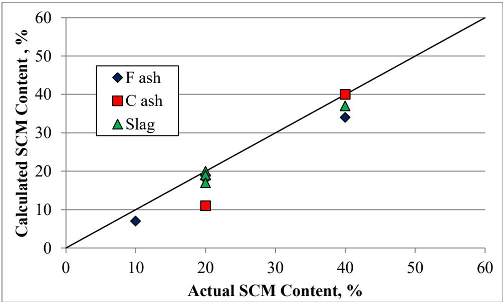
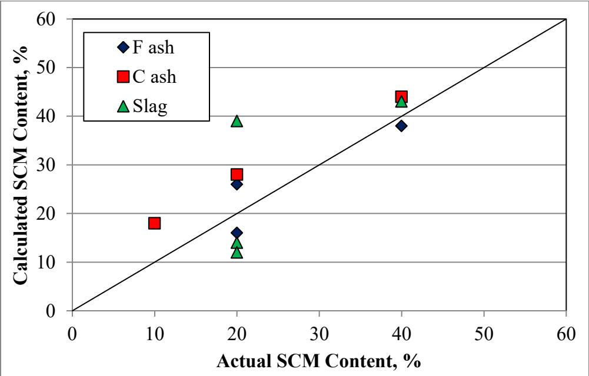
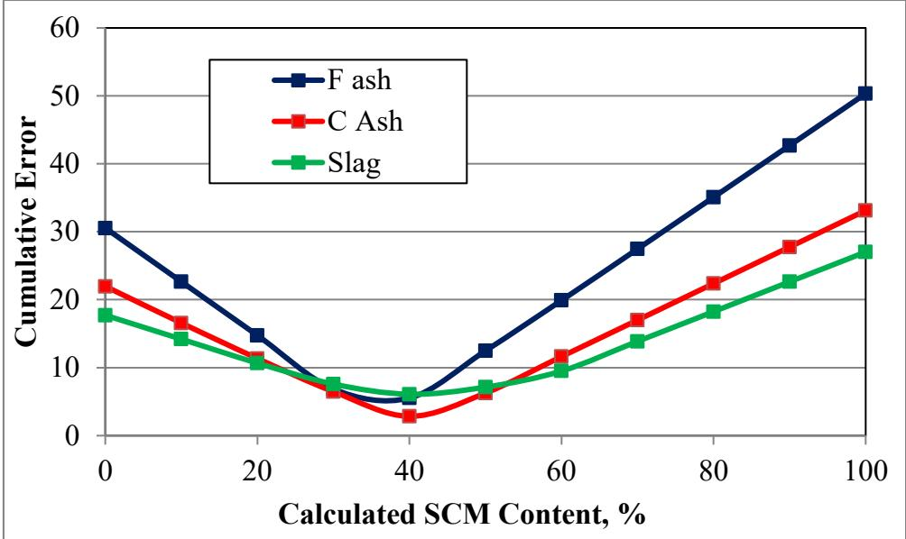

Supplementary Cementitious Materials
Supplementary cementitious materials are industrial by-products or natural minerals that partially replace Portland cement in concrete to form a hybrid binder system. These finely divided powders function through pozzolanic or latent hydraulic mechanisms, reacting with calcium hydroxide released during cement hydration to generate additional calcium silicate hydrate gel [1] [2] [3] [4] [5]. This chemical process refines the pore structure of the concrete matrix, which enhances long-term strength and durability while reducing permeability and heat evolution [2] [3] [4] [6]. By lowering the proportion of clinker required in production, these materials significantly reduce the carbon footprint and energy consumption associated with concrete manufacturing [1] [2] [3]. Because their chemical composition and physical characteristics vary widely between sources, their performance depends on dosage, blending strategies, and compatibility with other mix components [7] [3] [4] [8].
Supplementary Cementitious Materials enhance concrete by supplementing Portland cement through chemical reactions that produce additional binding compounds. Fly Ash contributes to concrete strength by exhibiting pozzolanic properties that chemically react with calcium hydroxide in the presence of moisture to form cementitious compounds. Ground Granulated Blast-Furnace Slag serves as a supplementary cementitious material by exhibiting latent hydraulic properties that allow it to chemically react with calcium hydroxide in the presence of moisture to form strength-providing compounds within concrete. Silica Fume serves as a high-reactivity pozzolan that consumes calcium hydroxide to generate additional cementitious compounds, thereby fulfilling the functional role of a supplementary cementitious material. Pozzolanic Reaction describes the chemical mechanism by which amorphous siliceous or aluminous materials react with calcium hydroxide to form strength-providing compounds, thereby defining the functional role of Supplementary Cementitious Materials in enhancing concrete performance.
Sources (31)
Sub-concepts (4)
Key findings
- Supplementary cementitious materials lower the peak heat of hydration and delay its occurrence, which reduces thermal cracking risk but requires adjusted maturity models and calorimetric monitoring for accurate strength prediction [2] [3] [6] [9] [10].
- Incorporating supplementary cementitious materials consistently slows early hydration, extends setting times, and reduces early-age strength, with these effects becoming more pronounced at lower curing temperatures [2] [3] [5] [6].
- Ternary blends of multiple supplementary cementitious materials offer superior durability and strength performance compared to binary systems or plain Portland cement, allowing for lower replacement levels to achieve alkali-silica reaction resistance [1] [11] [12] [8].
- While supplementary cementitious materials generally improve long-term durability and reduce permeability, they can negatively impact early-age properties such as de-icer scaling resistance and workability if not properly balanced with air entrainment and water-cement ratios [13] [14] [15].
- Calorimetry provides a reliable method for monitoring the heat evolution of concrete containing supplementary cementitious materials, enabling the detection of material compatibility issues and predicting early-age strength and set times [6] [9] [10].
- The use of supplementary cementitious materials reduces the carbon footprint of concrete by allowing for substantial replacement of Portland cement, though this benefit must be balanced against potential increases in drying shrinkage and early-age porosity [13] [16] [17].
- The type of fly ash significantly influences concrete performance, with Class F fly ash generally improving durability and mitigating sulfate expansion, while Class C fly ash can retard setting excessively and increase susceptibility to sulfate damage [18] [8].
- Mix design optimization for supplementary cementitious materials requires careful attention to admixture compatibility, as certain low-range water reducers can cause incompatibility issues that are resolved by using high-range polycarboxylate-based agents [3] [18].
Performance Trade-offs and Comparative Analysis
Evidence: 26 reports (22 primary)
Supplementary cementitious materials function by reacting with calcium hydroxide to generate additional binding phases, which refines the pore structure and enhances long-term durability while typically reducing early-age strength development [1] [3] [4]. Performance outcomes are highly sensitive to material variability in chemistry and fineness, requiring careful management of dosage and blending strategies to balance workability, setting time, and thermal behavior against the goal of reduced carbon emissions [2] [7] [6]. Designers must navigate trade-offs between different material classes, such as selecting between pozzolans that refine pore structure and latent hydraulic materials that modify heat evolution, to tailor concrete properties for specific environmental exposures [3] [5] [8].
The following figure illustrates how these material interactions influence mortar strength.

Effect of SCMs on mortar strength (Holcim cements) [2]The figure plots compressive strength against curing time for a base mix containing fly ash and four additional mixes incorporating varying percentages of silica fume. Visually, the data demonstrates that while the silica fume blends eventually reach comparable or higher strengths than the fly ash-only mix at later ages, they exhibit lower compressive strength during the initial curing period.
Research problem — Engineers lack reliable knowledge and performance-based specifications for how blended-cement concretes behave, particularly regarding early-age strength development, setting times, and heat evolution under varying ambient temperatures [1] [2] [3] [16]. The inherent compositional variability of supplementary cementitious materials creates uncertainty in mix design and quality control, leading to inconsistent fresh-state workability, rheology, and long-term durability outcomes [1] [7] [12] [18]. There is a critical need for practical, rapid field testing methods to monitor hydration heat and detect material incompatibilities, as existing laboratory standards often fail to accurately predict performance or assess durability risks in the field [6] [10] [15]. Incorporating supplementary cementitious materials introduces complex trade-offs between sustainability benefits and technical challenges, such as managing early-age shrinkage cracking, maintaining air-void system integrity, and balancing strength development with construction schedules [13] [17] [19] [20].
The following figure illustrates how different types of slag influence heat evolution compared to ordinary Portland cement.
 Heat evolution rates of ordinary Portland cement and slag-blended cements at different fineness levels. [6]
Heat evolution rates of ordinary Portland cement and slag-blended cements at different fineness levels. [6]
The figure plots the rate of heat evolution over time for three distinct binder systems: pure Ordinary Portland Cement (OPC), a blend with coarse ground-granulated-blast-furnace-slag, and a blend with fine slag. The data demonstrates that the fineness of the slag significantly influences hydration kinetics; specifically, the finely ground slag accelerates the peak heat evolution compared to the coarse slag and pure cement.
State of the art — The field has shifted from prescriptive, fixed-replacement mix recipes to integrated, performance-based frameworks that utilize binary and ternary blends to balance early-age strength, workability, and long-term durability [1] [7] [16]. Calorimetric monitoring of heat evolution has emerged as a primary quality-control tool to manage the trade-offs between SCM-induced setting delays and thermal cracking risks, enabling predictive modeling for construction scheduling [6] [9] [10]. Current practice addresses the inherent variability of by-product SCMs through rigorous chemical characterization and multi-stage testing suites that link material composition directly to fresh-state rheology and hardened-state transport properties [7] [12] [18].
The following figure illustrates how temperature influences the total heat evolution in blended cements containing slag.
 Total heat of blended cement with slag at different temperatures (adapted from Ma et al. 1994) [6]
Total heat of blended cement with slag at different temperatures (adapted from Ma et al. 1994) [6]
The figure plots the cumulative heat evolution in milliwatt-hours per gram against time for a blended cement containing slag across various curing temperatures. This thermal behavior illustrates the latent hydraulic mechanism of supplementary cementitious materials, where chemical reactions are significantly accelerated by elevated temperatures.
Findings from the reports
- Incorporating supplementary cementitious materials consistently lengthens initial and final set times while lowering the peak heat of hydration, creating a trade-off between reduced thermal-cracking risk and slower early-age strength development [2] [6] [8].
- Fly ash generally reduces water demand and mitigates premature stiffening, whereas ground granulated blast-furnace slag increases water requirement but consistently lowers peak hydration temperature [2] [3] [12].
- Material incompatibility between specific supplementary cementitious materials and chemical admixtures was identified as a primary cause of premature pavement distress in field investigations [3] [21] [18].
- Ternary blends combining multiple supplementary cementitious materials deliver superior durability against alkali-silica reaction and sulfate attack at lower replacement levels than binary systems or standard specification limits [1] [8].
- Calorimetric testing reliably detects supplementary cementitious material hydration signatures and predicts set times, providing a practical tool for monitoring mix compatibility and thermal cracking risk [9] [10].
- Construction practices such as re-tempering and elevated water-cement ratios played a larger role in deicer scaling performance than the proportion of supplementary cementitious materials present [14] [15].
- Increasing the proportion of fly ash in concrete mixes reduces early-age curling and long-term warping by lowering paste volume and moderating hydration-induced shrinkage [22] [18].
- Two-stage mixing protocols that premix supplementary cementitious materials with water before aggregate addition improve 28-day compressive strength and reduce entrapped air content despite a lower overall degree of hydration [19].
Novelty & rigor — Research has shifted from evaluating individual supplementary cementitious materials to systematically analyzing ternary blends, revealing cross-cutting trade-offs in durability and strength that contradict the assumption of independent SCM behavior [8]. Novelty lies in developing performance-based frameworks that treat material variability as a quantifiable risk factor, utilizing rapid on-site calorimetry and rheological screening to replace static percent-replacement rules with dynamic, data-driven mix design [7] [12]. Reproducibility is ensured through standardized protocols for material characterization and the use of unified computational tools that translate early-age thermal signatures into actionable pavement performance predictions across diverse SCM combinations [9] [10].
Reported values
| Parameter | Value | Context | Source |
|---|---|---|---|
| fly ash replacement | 15% | Des Moines area weather conditions (spring, summer, or fall) | [2] |
| R-squared value | 0.651 to 0.756 | linear models for three-day compressive strength predictions | [3] |
| flow spread (after 40 min) | 180 mm | Mix 0.32-G20, after 40 min rest | [23] |
| paste-to-voids ratio | 1.25 to 1.5 times | to obtain a minimum workability | [4] |
| cement content reduction | 24% | use of slag and addition of coarse aggregates | [13] |
| durability factor | 85% | IP concrete without AEA | [24] |
| compressive strength improvement over control | > 35% | broad optimum blend of portland cement, 20-60% slag, and 0-30% fly ash at 180 days | [12] |
| proportion of problems due to construction-related causes | 67% | problem projects surveyed | [18] |
| final thermal set time | 19.6 hours and 21.8 hours | nine concrete mixtures tested | [10] |
| entrained air volume | > 4% | tested mixture designs for freeze-thaw durability | [8] |
| SAM | 0.21 | average across 40 shadow-project mixes | [16] |
| Class C fly ash replacement proportion | 20% | recommended to replace portland cement to address dimensional stability, workability, and durability concerns | [17] |
| 28-day compressive strength increase | 10 percent% | two-stage mixed concrete vs conventional ready-mixed concrete | [19] |
| 28-day compressive strength | 1858 psi | pervious concrete mix with 15% slag replacement | [25] |
| calcium oxychloride content | 30.5 percent | QMC concrete mixtures | [26] |
64 more distinct values omitted here; the full span-verified set is in the quantities sidecar.
Across the reviewed reports, supplementary cementitious materials consistently improve long-term durability and reduce thermal cracking risk by lowering peak hydration temperatures, but these benefits are counterbalanced by slower early-age strength development and extended setting times that are highly sensitive to curing conditions. While ternary blends offer a robust pathway to enhance durability and achieve high long-term strengths, the specific performance outcomes depend heavily on SCM chemistry, with low-calcium fly ash and slag generally providing superior sulfate resistance compared to high-calcium alternatives. Fresh-state workability is often improved by SCMs like fly ash, yet this advantage can be negated by increased water demand from silica fume or incompatibilities with certain chemical admixtures that require specific reducer types. Field performance and durability metrics such as deicer scaling resistance are frequently governed more by construction practices and air-void system quality than by SCM dosage alone, highlighting a critical trade-off between material design and execution. [1] [2] [3] [21] [12] [6] [18] [8] [17] [14] [15]
The following figure illustrates how these various supplementary cementitious materials influence mortar strength development.
 Effect of SCMs on mortar strength (Lafarge cements) [2]
Effect of SCMs on mortar strength (Lafarge cements) [2]
The figure plots compressive strength against curing time for two cementitious mixtures, one containing fly ash and the other containing both fly ash and slag. Both mixtures exhibit a continuous increase in strength over the observed period, with the binary blend (fly ash only) maintaining slightly higher early-age strength than the ternary blend (fly ash and slag). This data illustrates how supplementary cementitious materials influence the mechanical performance of concrete, specifically demonstrating that while they contribute to long-term strength development, their inclusion can result in slower early-age strength gain compared to binary systems.
Implications — Designers must transition from prescriptive limits to performance-based specifications that explicitly account for the trade-offs between early-age strength, setting time, and long-term durability inherent in SCM blends [2] [18] [8]. The industry should prioritize the development of standardized testing protocols for quality control, particularly calorimetry and air-void analysis, to reliably monitor material variability and compatibility in ternary systems [27] [6] [9] [10]. Specifiers should revise existing durability tests that were calibrated for plain cement to avoid overly conservative caps on SCM replacement levels, ensuring regulations reflect the actual field performance of blended concretes [14] [15].
The following figure illustrates the distribution of mixture expansions relative to the Caltrans standard specification limits.

Distribution of mixture designs by ASTM C 1567 expansion and Caltrans specification compliance. [8]The figure displays a histogram comparing the number of concrete mixtures against their measured alkali-silica reaction (ASR) expansion, categorized by whether they passed or failed specific performance specifications. This data illustrates the practical application and limitations of Supplementary Cementitious Materials (SCM), specifically regarding how different replacement levels of materials like GGBFS and silica fume mitigate ASR expansion compared to prescriptive regulatory limits.
Limitations — The wide variability in the chemistry and physical properties of supplementary cementitious materials complicates reliable classification, making it difficult to predict how specific blends will perform under diverse conditions [1]. Existing predictive models for strength development and cracking are often constrained by narrow experimental scopes or unverified assumptions, limiting their applicability when extrapolated to different material sources or field environments [2] [3] [24]. Standardized testing methods frequently lack the sensitivity to distinguish between different supplementary cementitious materials or accurately reflect field performance, leading to uncertainties in assessing durability and workability trade-offs [27] [6] [9] [15].
Strength Development and Shrinkage Behavior
Evidence: 5 reports (2 primary)
Research problem — Current mechanistic-empirical design models fail to explicitly account for the specific type and amount of supplementary cementitious materials, leading to unreliable predictions of strength development and modulus of elasticity [5]. The delayed pozzolanic reactions associated with these materials cause a disconnect between early-age and ultimate compressive strengths, challenging the validity of standard curing periods for pavement design [5]. SCMs significantly alter shrinkage behavior and hydration kinetics, creating uncertainty in determining the optimal timing for saw-cutting to prevent both premature raveling and delayed random cracking [28] [29].
The following figure illustrates how this relationship is used to predict the modulus of rupture from compressive strength.

Comparison of modulus of rupture prediction models against compressive strength data. [5]The figure plots a scatter of experimental data points representing the relationship between concrete compressive strength and modulus of rupture, overlaid with several regression lines from different empirical equations. Among these models, the Iowa Equation is highlighted as having a coefficient of correlation of 0.54, which indicates relatively low prediction ability compared to other mechanical properties due to high variability in mix designs.
State of the art — The slow pozzolanic reactions of supplementary cementitious materials have shifted industry focus toward later-age performance, prompting agencies to consider 56-day strengths rather than relying solely on traditional 28-day values [5]. Current practice utilizes ternary blends of multiple SCMs to tailor concrete shrinkage and durability, aiming to lower early-age shrinkage and influence joint-cracking behavior in pavement applications [29]. While instrumented strain-gage monitoring is standard for quantifying crack onset, the delayed crack initiation caused by low-shrinkage blends requires adjusted sawing strategies and highlights a need for broader research on shrinkage characteristics across different SCM combinations [29].
Findings from the reports
- Found a decline in average 28-day compressive strength in large-scale field records, attributing the reduction to the increased use of supplementary cementitious materials and recommending 56-day strength values for pavement design [5].
- Observed that early-entry sawing significantly delayed crack initiation in ternary concrete pavements containing slag and fly ash compared to conventional cutting depths, while no random cracking occurred within two months of placement [29].
Novelty & rigor — Research introduces a unified protocol that abandons universal cement assumptions by measuring SCM-specific datum temperatures and activation energies under distinct weather regimes to calibrate maturity-based time-temperature factor calculations [2]. Studies propose shifting strength evaluation benchmarks from traditional twenty-eight-day measurements to fifty-six-day values to account for the delayed pozzolanic reactions characteristic of supplementary cementitious materials [5]. Novelty in shrinkage mitigation is demonstrated through field-scale instrumentation that couples early-entry sawing techniques with low-shrinkage ternary blends, using embedded strain gages to directly quantify crack initiation timing [29]. Innovative applications of portable ultrasonic pulse-velocity systems provide objective, real-time detection of initial set in fresh concrete, replacing subjective visual cues with measurable velocity rises to schedule sawing operations [28] [30].
The following figure illustrates how varying curing temperatures directly influence the initial set time of concrete.

Effects of curing temperature on initial set time of concrete [2]The figure plots the initial setting time against varying curing temperatures for three distinct binder mixtures, including a control and two mixes containing fly ash.
Reported values
| Parameter | Value | Context | Source |
|---|---|---|---|
| mean compressive strength | 4,397 psi | 28-day core concrete (after 2000) | [5] |
| mean compressive strength | 4,700 psi | 28-day core concrete (1980s–1990s) | [5] |
| standard deviation of compressive strength | 638 psi | 28-day core concrete (after 2000) | [5] |
| strength testing age | 28-day | concrete pavement design considering slow pozzolanic reaction of SCMs | [5] |
| strength testing age | 56-day | concrete pavement design considering slow pozzolanic reaction of SCMs | [5] |
| joint cracking time | 0.6 days | conventional … one‑third of the pavement thickness | [29] |
| joint cracking time | 12.3 days | early entry sawing | [29] |
| joint cracking time | 2.2 days | conventional … one‑quarter of the pavement thickness | [29] |
| joint cracking time | 25 days | all 30 joints after paving | [29] |
Across the reviewed reports, the incorporation of supplementary cementitious materials is associated with a measurable decline in early-age compressive strength relative to conventional Portland cement mixes, as evidenced by historical field data showing reduced 28-day values and laboratory observations of slower reaction kinetics. This delayed strength development necessitates extended curing periods or later evaluation ages to achieve target performance levels, a requirement that directly influences the timing of joint sawing and the resulting shrinkage cracking behavior in pavement applications. [5] [29]
The impact of these curing requirements on joint performance is illustrated in the following figure.
 Contrast in joints with different saw cut depths [29]
Contrast in joints with different saw cut depths [29]
The image displays a cross-section of concrete pavement showing a vertical joint that has cracked through the full depth of the slab.
Implications — Designers should shift pavement specifications to rely on strength measurements taken at approximately 56 days rather than the conventional 28-day mark, as early-age performance is often compromised by the increasing use of supplementary cementitious materials [5]. Until local long-term data becomes more abundant, practitioners should continue using MEPDG default values for shrinkage while systematically documenting mix designs and full property sets to enable more accurate, region-specific prediction models [5].
The following figure illustrates the drying shrinkage behavior of the Iowa C-3WR-C20 mix in comparison to other mixes.
 Drying shrinkage of Iowa C-3WR-C20 mix and its comparison with others [5]
Drying shrinkage of Iowa C-3WR-C20 mix and its comparison with others [5]
The figure plots the drying shrinkage in microstrain against the drying period in days for three different concrete mixes. Results show that, as expected, the concrete drying shrinkage increases dramatically at the early age, and as the age increases, while the specimens become drier, the trend of the increasing gradually decreases. The results of drying shrinkage test the figure showed very similar trends comparing to testing results from mixture with close w/c (0.45) according to existing reference.
Limitations — The delayed chemical activity of these materials renders standard 28-day strength measurements an unreliable basis for structural design, necessitating longer curing periods for accurate assessment [5]. A significant lack of localized experimental data forces reliance on generic default values for critical properties like shrinkage and elastic modulus, which undermines the precision of predictive models [5].
Quality Control and Dosage Monitoring
Evidence: 1 report (1 primary)
Research problem — Current quality control methods rely on plant batch tickets that fail to account for loading inaccuracies, silo calibration drift, and post-dispatch water additions, leaving the actual proportioning of supplementary cementitious materials in delivered concrete batches unknown [31]. There is a need for rapid, inexpensive field testing methods to verify that each mix meets its intended supplementary cementitious material content, as precise dosage governs pavement durability and life-cycle cost while unknown proportions can lead to premature deterioration [31].
The following figure illustrates the discrepancy between actual and intended dosages by showing the relationship between tested and batched SCM contents.

Comparison of tested versus batched supplementary cementitious material contents. [31]The figure plots the calculated SCM content against the actual SCM content, demonstrating a strong positive correlation for fly ash, class C fly ash, and slag mixtures.
Findings from the reports
- The device consistently over‑estimated sulfate concentrations, indicating a bias toward higher sulfate readings in cementitious mixtures [31].
- A large undetected‑element balance was recorded, particularly for fine aggregate samples, showing that the instrument missed a notable portion of the elemental composition [31].
- The unexplained balance term correlated strongly with sample moisture, suggesting that moisture content affected the XRF measurements [31].
- Prediction errors increased markedly for mortar specimens because sample heterogeneity introduced substantial inaccuracies, making the method considerably less reliable for mortar than for paste [31].
- The study concluded that further refinement of the handheld XRF approach is required before it can be used for dependable field‑level monitoring of SCM content [31].
Novelty & rigor — The research introduces a field-deployable method that utilizes handheld X-ray fluorescence to infer supplementary cementitious material dosages in fresh concrete by solving for elemental oxide compositions, thereby bypassing the delays of traditional laboratory testing [31]. This approach is distinct because it employs a least-squares spreadsheet routine to back-calculate mix proportions from real-time elemental readouts, offering a reproducible mechanism for rapid quality verification that accounts for moisture content through unexplained balance fractions [31].
The following figure illustrates the correlation between the actual and intended supplementary cementitious material dosages determined by this method.

The relationship between tested and designed SCM content (fixed sand content at 15%) [31]The figure plots the calculated versus actual content of fly ash, C ash, and slag, showing how closely the measured values align with the target mix proportions.
Implications — Practitioners can utilize portable X-ray fluorescence for rapid, field-based verification of SCM dosages in homogeneous paste mixes to support performance-based specifications [31]. Current limitations in analyzing heterogeneous mortar samples necessitate further development of mix-signatures and error-correction methods before this technology can be reliably applied to all concrete types [31].
The following figure illustrates how cumulative error varies with calculated SCM content.

Cumulative error versus calculated supplementary cementitious material (SCM) content for fly ash, Class C fly ash, and slag mixtures. [31]The figure plots the cumulative error against the calculated SCM content to demonstrate the sensitivity of a least-differences approach used to determine proportions in paste mixtures. The data sets shown are for 40% SCM mixtures containing fly ash, Class C fly ash, or slag. Each curve exhibits a clear minimum error at specific calculated content levels, indicating that the method can identify optimal dosages for these industrial by-products.
Limitations — Portable X-ray fluorescence devices exhibit limited detection capabilities and significant errors when analyzing supplementary cementitious materials due to sample heterogeneity [31]. The practical application of these monitoring methods on construction sites is constrained by the difficulty of obtaining representative paste samples [31].
The following figure illustrates a handheld X-ray fluorescence device used for such on-site analysis.
Handheld XRF device [31]
The image displays a handheld X-ray fluorescence (XRF) analyzer, specifically the Niton XL3t model manufactured by Thermo Scientific.
Related concepts
In this hierarchy
- Parent: Cementitious Materials & Chemistry
- Child: Fly Ash
- Child: Ground Granulated Blast-Furnace Slag
- Child: Pozzolanic Reaction
- Child: Silica Fume
Related by shared evidence
- CP Tech Center Reports — shares 36 reports
- Concrete Materials & Mixtures — shares 35 reports
- Cementitious Materials & Chemistry — shares 33 reports
- Fly Ash — shares 33 reports
- Cement Hydration — shares 28 reports
- Air Entraining Agent — shares 27 reports
- Concrete Curing — shares 22 reports
- Freeze-Thaw Durability — shares 22 reports
Similar topics
- Cement Hydration
- Fly Ash
- Ground Granulated Blast-Furnace Slag
- Freeze-Thaw Durability
- Blended Cement
- Concrete Curing
- Air Entraining Agent
- Concrete Materials & Mixtures
References
- S. Schlorholtz, "Development of Performance Properties of Ternary Mixes: Scoping Study (Phase 1)," Center for Portland Cement Concrete Pavement Technology, Iowa State University, Ames, IA, Rep. DTFH61-01-X-00042 (Project 13), 2004. [Online]. Available: https://www.cptechcenter.org/wp-content/uploads/2018/03/ternary_mixes.pdf
- K. Wang and Z. Ge, "Evaluating Properties of Blended Cements for Concrete Pavements," Department of Civil, Construction and Environmental Engineering, Iowa State University, Ames, IA, 2003. [Online]. Available: https://www.intrans.iastate.edu/wp-content/uploads/2018/03/blended_cements-1.pdf
- P. Tikalsky, V. Schaefer, K. Wang, B. Scheetz, T. Rupnow, A. St. Clair, M. Siddiqi, and S. Marquez, "Development of Performance Properties of Ternary Mixes, Phase 1," Center for Transportation Research and Education, Ames, IA, Rep. TPF-5(117), 2007. [Online]. Available: https://www.intrans.iastate.edu/research/completed/development-of-performance-properties-of-ternary-mixes-phase-1/
- P. Taylor, F. Bektas, E. Yurdakul, and H. Ceylan, "Optimizing Cementitious Content in Concrete Mixtures for Required Performance," National Concrete Pavement Technology Center, Ames, IA, 2012. [Online]. Available: https://www.intrans.iastate.edu/wp-content/uploads/2018/03/taylor_ocm_w_cvr2.pdf
- K. Wang, J. Hu, and Z. Ge, "Task 4: Testing Iowa PCC Mixtures for the AASHTO Mechanistic-Empirical Pavement Design Procedure," Center for Transportation Research and Education, Ames, IA, Rep. CTRE 06-270, 2008. [Online]. Available: https://www.intrans.iastate.edu/research/completed/testing-iowa-portland-cement-concrete-mixtures-for-the-mechanistic-empirical-pavement-design-guide/
- K. Wang, Z. Ge, J. Grove, J. M. Ruiz, and R. Rasmussen, "Developing a Simple and Rapid Test for Monitoring the Heat Evolution of Concrete Mixtures (Phase 3)," CTRE, Iowa State University, Ames, IA, Rep. FHWA Project 17 (Phase I), 2006. [Online]. Available: https://www.intrans.iastate.edu/wp-content/uploads/2018/03/CalorimeterReportPhaseIII.pdf
- D. Harrington, R. Rasmussen, D. Merritt, T. Cackler, and P. Taylor, "Long-Term Plan for Concrete Pavement Research and Technology—The Concrete Pavement Road Map (Second Generation): Volume II, Tracks (FHWA-HRT-11-070)," National Center for Concrete Pavement Technology, Iowa State University, Ames, IA, 2012. [Online]. Available: https://www.fhwa.dot.gov/publications/research/infrastructure/pavements/pccp/11070/11070.pdf
- P. Tikalsky, P. Taylor, S. Hanson, and P. Ghosh, "Development of Performance Properties of Ternary Mixtures: Laboratory Study on Concrete," National Concrete Pavement Technology Center, Ames, IA, Rep. TPF-5(117), 2011. [Online]. Available: https://www.intrans.iastate.edu/research/completed/development-of-performance-properties-of-ternary-mixtures-laboratory-study-on-concrete/
- K. Wang, Z. Ge, J. Grove, J. M. Ruiz, R. Rasmussen, and T. Ferragut, "Simple and Rapid Test for Monitoring the Heat Evolution of Concrete Mixtures, Phase 2," Center for Transportation Research and Education, Ames, IA, 2007. [Online]. Available: https://www.intrans.iastate.edu/wp-content/uploads/2018/03/calorimeter.pdf
- K. Wang, J. M. Ruiz, J. Hu, Z. Ge, Q. Xu, J. Grove, and R. Rasmussen, "Simple and Rapid Test for Monitoring the Heat Evolution ..., Phase III," National Concrete Pavement Technology Center, Ames, IA, 2008. [Online]. Available: https://www.intrans.iastate.edu/wp-content/uploads/2018/03/CalorimeterReportPhaseIII.pdf
- J. Grove, F. Bektas, and H. Gieselman, "Southeast Michigan Local Road Concrete Pavement Durability Study," National Concrete Pavement Technology Center, Ames, IA, 2006. [Online]. Available: https://www.cptechcenter.org/wp-content/uploads/2018/03/mi_pavement_durability.pdf
- S. Schlorholtz, K. Wang, J. Hu, and S. Zhang, "Materials and Mix Optimization Procedures for PCC Pavements," CTRE, Iowa State University, Ames, IA, Rep. TR-484, 2006. [Online]. Available: https://www.intrans.iastate.edu/wp-content/uploads/2018/03/mco-final.pdf
- K. Wang, S. P. Shah, J. Grove, P. Taylor, P. Wiegand, B. Steffes, G. Lomboy, Z. Quanji, L. Gang, and N. Tregger, "Self-Consolidating Concrete—Applications for Slip-Form Paving: Phase II," National Concrete Pavement Technology Center, Ames, IA, Rep. TPF-5(098), 2011. [Online]. Available: https://www.intrans.iastate.edu/wp-content/uploads/2018/03/SCC_Phase_2_final_report-edited_wcover.pdf
- S. Schlorholtz and R. D. Hooton, "Deicer Scaling Resistance ... Containing Slag Cement, Phase 1: Site Selection and Analysis of Field Cores," National Concrete Pavement Technology Center, Ames, IA, Rep. TPF-5(100), 2008. [Online]. Available: https://www.cptechcenter.org/wp-content/uploads/2018/03/schlorholtz_deicing_phase1.pdf
- R. D. Hooton and D. Vassilev, "Deicer Scaling Resistance of Concrete Mixtures Containing Slag Cement, Phase 2," National Concrete Pavement Technology Center, Ames, IA, Rep. TPF-5(100), 2012. [Online]. Available: https://www.intrans.iastate.edu/research/completed/deicer-scaling-resistance-of-concrete-pavements-bridge-decks-and-other-structures-containing-slag-cement-phase-2-evaluation-of-different-laboratory-scaling-test-methods/
- J. Gross, J. Weiss, T. Ley, P. Taylor, N. Weitzel, T. Van Dam, G. Smith, and C. Jones, "Performance-Engineered Concrete Paving Mixtures," National Concrete Pavement Technology Center, Iowa State University, Ames, IA, Rep. TPF-5(368), 2022. [Online]. Available: https://www.intrans.iastate.edu/wp-content/uploads/2023/04/performance-engineered_concrete_paving_mixtures_w_cvr.pdf
- B. Shafei, P. Taylor, B. Phares, and M. Kazemian, "Fiber-Reinforced Concrete for Bridge Decks," Bridge Engineering Center, Iowa State University, Ames, IA, Rep. TR-767, 2021. [Online]. Available: https://www.intrans.iastate.edu/wp-content/uploads/2021/12/fiber-reinforced_concrete_in_bridge_decks_w_cvr.pdf
- J. Grove, G. Fick, T. Rupnow, and F. Bektas, "Material and Construction Optimization for Prevention of Premature Pavement Distress in PCC Pavements," National Concrete Pavement Technology Center, Ames, IA, Rep. TPF-5(066), 2008. [Online]. Available: https://www.intrans.iastate.edu/wp-content/uploads/2018/03/mco-final.pdf
- T. D. Rupnow, V. R. Schaefer, K. Wang, and B. L. Hermanson, "Improving PCC Mix Consistency and Production Rate through Two-Stage Mixing," Center for Transportation Research and Education, Ames, IA, Rep. TR-505, 2007. [Online]. Available: https://www.intrans.iastate.edu/wp-content/uploads/2018/03/two-stage-mix-1.pdf
- P. Taylor, L. Sutter, and J. Weiss, "Investigation of Deterioration of Joints in Concrete Pavements," National Concrete Pavement Technology Center, Ames, IA, Rep. TPF-5(224), 2012. [Online]. Available: https://www.intrans.iastate.edu/wp-content/uploads/2018/03/joint_deterioration_penetrating_sealers_field_study_w_cvr.pdf
- C. V. Hazaree, H. Ceylan, P. Taylor, K. Gopalakrishnan, K. Wang, and F. Bektas, "Use of Chemical Admixtures in Roller-Compacted Concrete for Pavements," National Concrete Pavement Technology Center, Ames, IA, 2013. [Online]. Available: https://www.intrans.iastate.edu/wp-content/uploads/2018/03/rcc_admixture_w_cvr1.pdf
- H. Ceylan, S. Yang, K. Gopalakrishnan, S. Kim, P. Taylor, and A. Alhasan, "Impact of Curling and Warping on Concrete Pavement," Institute for Transportation, Ames, IA, Rep. TR-668, 2016. [Online]. Available: https://www.intrans.iastate.edu/wp-content/uploads/2018/03/curling_and_warping_impact_on_concrete_pvmt_w_cvr.pdf
- K. Wang, K. Wi, S. Laflamme, S. Sritharan, P. Taylor, and H. Qin, "Feasibility Study of 3D Printing of Concrete for Transportation Infrastructure," Institute for Transportation, Iowa State University, Ames, IA, Rep. TR-756, 2020. [Online]. Available: https://intrans.iastate.edu/app/uploads/2020/10/concrete_transportation_infrastructure_3D_printing_feasibility_w_cvr.pdf
- K. Wang, G. Lomboy, and R. Steffes, "Investigation into Freezing-Thawing Durability of Low-Permeability Concrete with and without Air Entraining Agent," National Concrete Pavement Technology Center, Ames, IA, 2009. [Online]. Available: https://www.intrans.iastate.edu/wp-content/uploads/2018/03/low-permeability-concrete.pdf
- S. K. Ong, K. Wang, Y. Ling, and G. Shi, "Pervious Concrete Physical Characteristics and Effectiveness in Stormwater Pollution Reduction," Institute for Transportation, Ames, IA, Rep. DTRT13-G-UTC37, 2016. [Online]. Available: https://www.intrans.iastate.edu/wp-content/uploads/2018/03/pervious_concrete_in_stormwater_pollution_reduction_w_cvr.pdf
- X. Wang, P. Taylor, and D. King, "Evaluation of Modified Concrete Mixture Proportions for the City of West Des Moines," National Concrete Pavement Technology Center, Ames, IA, 2016. [Online]. Available: https://www.intrans.iastate.edu/wp-content/uploads/2018/03/WDM_modified_concrete_mixture_proportions_w_cvr.pdf
- K. Wang, M. Mohamed-Metwally, F. Bektas, and J. Grove, "Improving Variability and Precision of Air-Void Analyzer (AVA) Test Results ..., Phase I," Center for Transportation Research and Education, Ames, IA, 2008. [Online]. Available: https://www.cptechcenter.org/wp-content/uploads/2018/03/ava-1.pdf
- P. Taylor and X. Wang, "Comparison of Setting Time Measured Using Ultrasonic Wave Propagation with Saw-Cutting Times on Pavements," National Concrete Pavement Technology Center, Ames, IA, Rep. TR-675, 2015. [Online]. Available: https://www.intrans.iastate.edu/wp-content/uploads/2018/03/PCC_setting_time_and_joint_sawing_w_cvr.pdf
- K. Wang, J. Hu, F. Bektas, P. Taylor, and H. Ceylan, "Crack Development in Ternary Mix Concrete Utilizing Various Saw Depths," National Concrete Pavement Technology Center, Ames, IA, Rep. TR-587, 2009. [Online]. Available: https://publications.iowa.gov/19999/1/IADOT_tr_587_Crack_Development_Ternary_Mix_Concrete_Saw_Depths_February_2009.pdf
- P. Taylor and X. Wang, "Concrete Pavement MDA: Comparison of Setting Time Measured Using Ultrasonic Wave Propagation With Saw-Cutting Times on Pavements in Iowa," National Concrete Pavement Technology Center, Ames, IA, Rep. TPF-5(205), 2014. [Online]. Available: https://www.intrans.iastate.edu/research/completed/comparison-of-setting-time-measured-using-ultrasonic-wave-propagation-with-saw-cutting-times-on-pavements-in-iowa/
- P. C. Taylor, E. Yurdakul, and H. Ceylan, "Concrete Pavement MDA: Application of a Portable X-Ray Fluorescence Technique to Assess Concrete Mix Proportions," National Concrete Pavement Technology Center, Ames, IA, Rep. TPF-5(205), 2012. [Online]. Available: https://www.intrans.iastate.edu/research/completed/concrete-pavement-mixture-design-and-analysis/
Feedback on this page